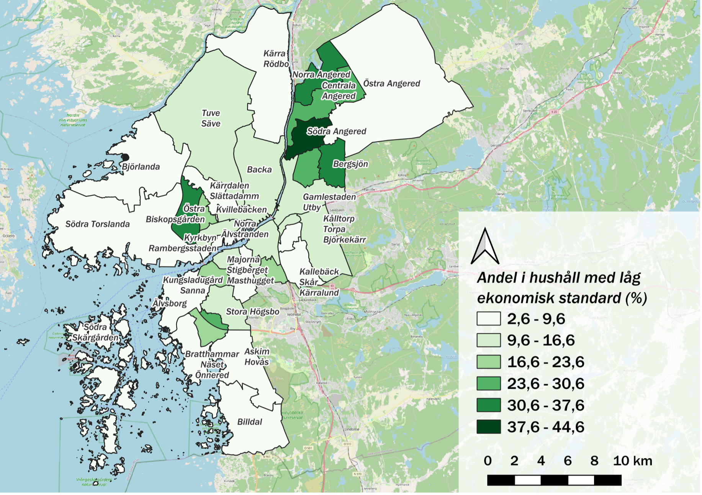

Public Administration and Political Science Study
A comprehensive GIS analysis focusing on the accessibility of public services in Gothenburg. A report conducted with my classmate Sara Hultqvist
Project Details / Background
Public services such as schools, libraries, and public transportation should be accessible to the entire population, regardless of socio-economic background. In recent years, the City of Gothenburg has introduced a new area division, consisting of 36 subareas, aimed at creating more socio-economically balanced units within the city. In this report, we examine the extent of differences in access to public services between these areas. We base our analysis on the demographic centroid of each subarea and conduct a time-based analysis in terms of walking distance to determine how far it is to various public services/functions. Our findings show that there is generally good access to public services from each demographic centroid, with the exception of certain outer areas and the Southern Archipelago. GIS is a useful tool for highlighting the conditions and access to public services within the City of Gothenburg, as is demonstrated in this report written and created by me and my classmate Sara Hultqvist.
Full Report
You can view the full report by clicking on the link below:
Visual Highlights
 Library Access Map: This map displays walking distance to libraries within various areas of Gothenburg, categorized by time intervals.
Library Access Map: This map displays walking distance to libraries within various areas of Gothenburg, categorized by time intervals.
 Bus Stop Accessibility Map: This map illustrates the accessibility of bus stops in Gothenburg, highlighting walking distances in minutes.
Bus Stop Accessibility Map: This map illustrates the accessibility of bus stops in Gothenburg, highlighting walking distances in minutes.
 Preschool Access Map: This map shows the walking distance to preschools across Gothenburg, categorized by proximity.
Preschool Access Map: This map shows the walking distance to preschools across Gothenburg, categorized by proximity.
 School Access Map: This map displays the proximity to elementary schools, showing walking distances in minutes for various areas of Gothenburg.
School Access Map: This map displays the proximity to elementary schools, showing walking distances in minutes for various areas of Gothenburg.
 Tram Access Map: This map illustrates the walking distance to tram stops in Gothenburg, categorized by time intervals.
Tram Access Map: This map illustrates the walking distance to tram stops in Gothenburg, categorized by time intervals.
Unemployment Rate Map: This map shows the percentage of openly unemployed individuals across different districts in Gothenburg.

Household Economic Standards Map: This map depicts the percentage of households with low economic standards in various districts of Gothenburg.
Educational Attainment Map: This map highlights the percentage of the population with high school or higher education across different districts in Gothenburg
×